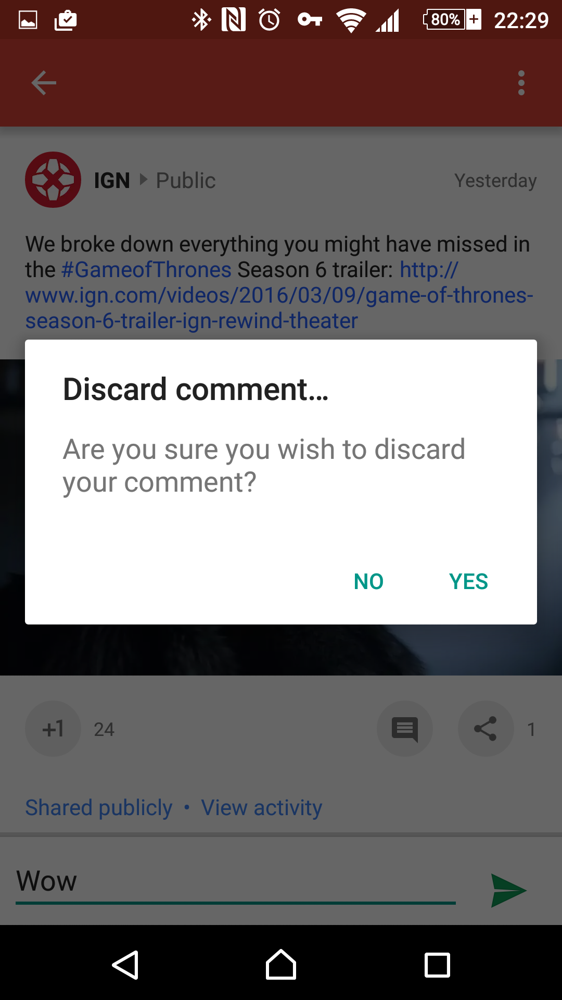

Activity
Bundle 结构
Bundle[{
android:viewHierarchyState
=Bundle[{
android:views={
16908290=android.view.AbsSavedState$1@b0e11200,
2131558485=android.view.AbsSavedState$1@b0e11200,
2131558486=android.view.AbsSavedState$1@b0e11200,
2131558512=TextView.SavedState{b103b178 start=-1 end=-1 text=5137},
2131558513=android.view.AbsSavedState$1@b0e11200
}
}
],
rand=5137
}]
onSaveInstanceState
不会导致 onDestroy 的 onStop 之前调用，Android 不知道 Activity 退到后台后还会不会恢复。
会导致 onDestroy 的 onStop ，比如按 back 键或者 finish。Android 知道 onStop 后将会 onDestroy
onRestoreInstanceState
onRestoreInstanceState 仅当 onCreate saveInstanceState 不为 null 时才会调用，也就是说这个方法可以断言 Activity 是处于恢复状态中；而 onCreate 需要判断 saveInstanceState 是否为 null
- 所处的生命周期不同，onRestoreInstanceState 在 onStart 与 onResume 之间调用，也就是此时 UI 已经初始化好了，Activity 也获得当前窗口的控制权，就差绘制在屏幕上了；而 onCreate 中甚至可以在 setContentView 之前恢复状态。
- 这个方法也是 Activity 恢复当前存储的 View’s SaveState 的地方{@link android.view.Window#restoreHierarchyState}
什么时候能触发
- onConfigurationChange
- 将 Activity 置于后台，然后杀死进程，再重新切换回去。能模拟 Activity 在后台被杀的情况。
View 什么时候恢复
protected void onRestoreInstanceState(Bundle savedInstanceState) {
if (mWindow != null) {
Bundle windowState = savedInstanceState.getBundle(WINDOW_HIERARCHY_TAG);
if (windowState != null) {
mWindow.restoreHierarchyState(windowState);
}
}
}
PhoneWindow#restoreHierarchyState
@Override
public void restoreHierarchyState(Bundle savedInstanceState) {
if (mContentParent == null) {
return;
}
// 恢复 View 状态
SparseArray<Parcelable> savedStates
= savedInstanceState.getSparseParcelableArray(VIEWS_TAG);
if (savedStates != null) {
mContentParent.restoreHierarchyState(savedStates);
}
// 恢复焦点
// restore the focused view
int focusedViewId = savedInstanceState.getInt(FOCUSED_ID_TAG, View.NO_ID);
if (focusedViewId != View.NO_ID) {
View needsFocus = mContentParent.findViewById(focusedViewId);
if (needsFocus != null) {
needsFocus.requestFocus();
} else {
Log.w(TAG,
"Previously focused view reported id " + focusedViewId
+ " during save, but can't be found during restore.");
}
}
// restore the panels
SparseArray<Parcelable> panelStates = savedInstanceState.getSparseParcelableArray(PANELS_TAG);
if (panelStates != null) {
restorePanelState(panelStates);
}
if (mDecorContentParent != null) {
SparseArray<Parcelable> actionBarStates =
savedInstanceState.getSparseParcelableArray(ACTION_BAR_TAG);
if (actionBarStates != null) {
doPendingInvalidatePanelMenu();
mDecorContentParent.restoreToolbarHierarchyState(actionBarStates);
} else {
Log.w(TAG, "Missing saved instance states for action bar views! " +
"State will not be restored.");
}
}
}
SaveInstanceState 应该保存什么？
- 用户操作
- onSaveInstanceState() function has to be used for saving small objects, not for heavy objects.
以 ImageView 为例，ImageView 中的 Drawable 是不会被保存的。
ScrollView 的滚动位置就是一个要保存的经典例子
在 PhoneWindow 中也可看到当前焦点也会被保存。所以总的来说就是要保存用户操作。
但是 Android 是鼓励 Edit in place 逻辑的。也就是说编辑即生效。比如 CheckBox 但我们打勾的时候，这个数据就实时写入，更新到 SharePerferecn 或数据库中。

当然，对于 EditText 可能不必要加个 TextWatcher 每次文本有变动就更新到数据源。那么我们可以在 onStop 方法更新到数据源。因为在 onStop 之前 Activity 是不会被系统回收掉的。文档鼓励是在 onPause 因为 3.0 之前 onStop 可能不被调用就会被干掉。比如说 Actvity 已经不是不在顶部，但仍然可见。这时也可能被杀掉… 3.0 之后两个方法任意一个保存数据都没什么区别，但个人选择 onStop 可以减少保存数据的频率。FYI：http://stackoverflow.com/a/29496430 但是注意这里应该选择异步方法更新数据，才不会阻塞到 UI。
既然数据在 onPause 或 onStop 中已经保存。那也就没必要再 onSaveInstanceState 中再保存一次。Actvity 重建的时候再从数据源获取数据更新到 UI 就可以。
但是不是所有数据源都像 SharePreference 或本地数据库那样低的写入成本。如果数据源在网络怎么办。更新数据的成本大，而且很多时候更新数据源意味着发布数据，这就不能套上 Edit in place 的逻辑了。

这些临时数据即属于用户操作，又不能或者没必要缓存起来，那就应该在 onSaveInstanceState 中保存了。
需要用户长时间输入的数据，那就应该设计一个草稿箱了。
Fragment
没有 onRestoreInstanceState
FragmentTransaction#detach()/attach()
detach 会使 fragment 到 destroy view 状态，其 view 树 会分发 save instance state 事件但 fragment 本身不会调用 save instance state。
Fragment 仍然是同一个实例
代码要怎么写
通过网络获取数据后，更新到 Fragment 的界面。Fragment detach/attch 友好的代码要怎么写
View
http://trickyandroid.com/